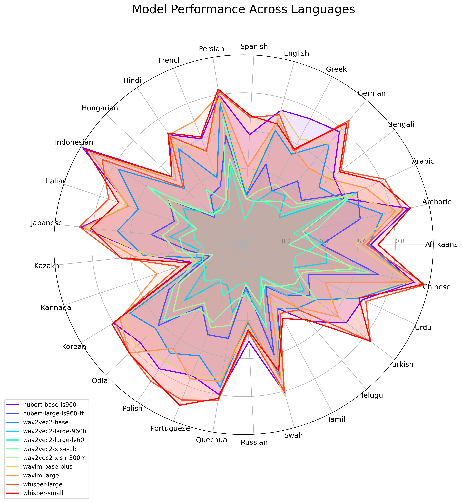
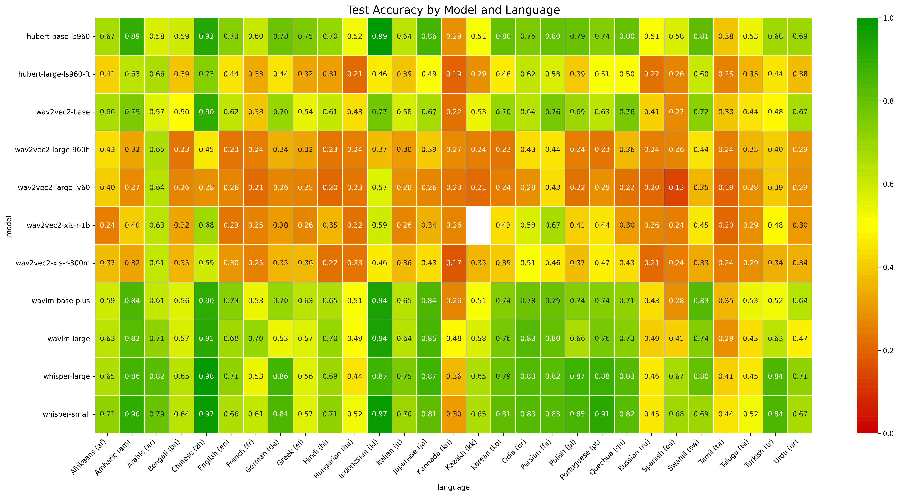
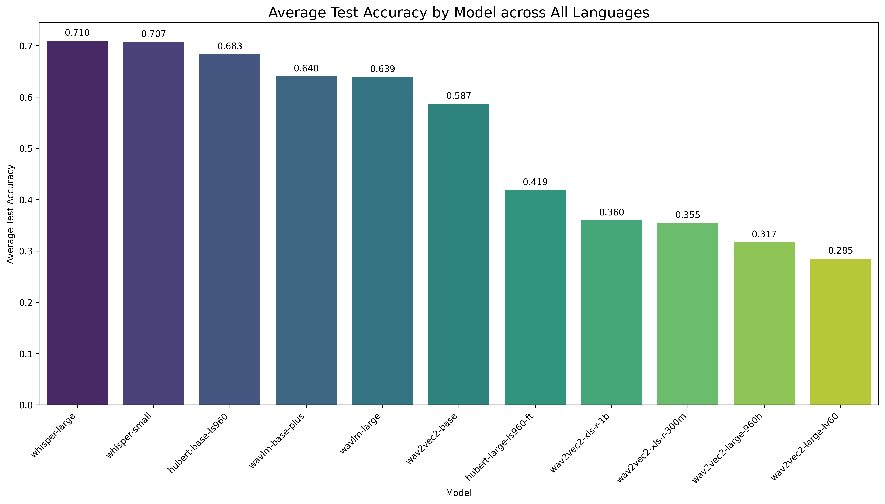
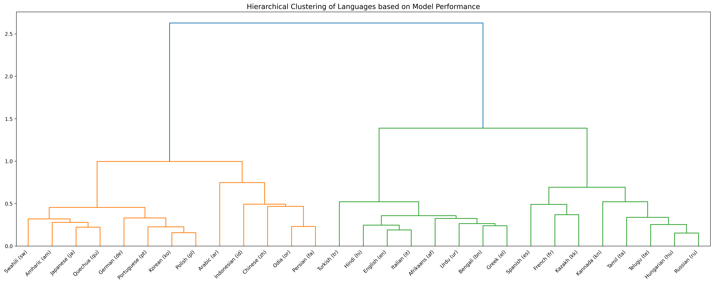

KuralHub catalogs and benchmarks Speech Emotion Recognition (SER) datasets across the world's languages — from high-resource to long-tail — so researchers can find data and compare models in one place.
Speech Emotion Recognition research is fragmented: datasets are scattered, inconsistently documented, and heavily skewed toward a handful of high-resource languages. KuralHub brings them together.
We reviewed Speech Emotion Recognition resources for 70+ languages, documenting 90+ datasets with consistent metadata — emotion categories, speaker counts, recording conditions, licensing, and access links. For 29 languages with usable open data, we ran a controlled benchmark: each of 11 pretrained speech encoders is fine-tuned per language (monolingual, not multilingual) by attaching a lightweight classification head on top of the frozen backbone, then evaluated on held-out test sets.
The result is a living atlas that helps researchers and practitioners locate datasets quickly and choose the right model for a given language.
Consistent, structured metadata for 90+ SER datasets — emotions, speakers, license, and access links — organized by language and family.
11 state-of-the-art speech models fine-tuned per language under one protocol, with validation and test accuracy reported transparently.
From English and Mandarin to long-tail languages across 12+ language families — surfacing where emotion data exists and where gaps remain.
A single, controlled fine-tuning protocol applied consistently across every language and model.
Gather open SER datasets per language and normalize their emotion labels, splits, and metadata into a common format.
Freeze each pretrained speech encoder and train a classification head on top — one monolingual model per dataset, never mixed multilingual.
Score validation and test accuracy on held-out splits and aggregate results by model, language, and language family.
A glimpse of the analysis. Click any figure to enlarge, or dive into the full interactive benchmark.




Department of Computer Science & Engineering, University of Moratuwa, Sri Lanka — aaivu research lab.
@inproceedings{kuralhub2026,
title = {KuralHub: A Comprehensive Review of Speech Emotion Recognition Datasets},
author = {Thavarasa, Luxshan and Thevakumar, Jubeerathan and
Sivatheepan, Thanikan and Thayasivam, Uthayasanker},
booktitle = {Interspeech},
year = {2026},
note = {To appear}
}
Accepted at Interspeech 2026 — full citation details will be finalized once the paper is published.